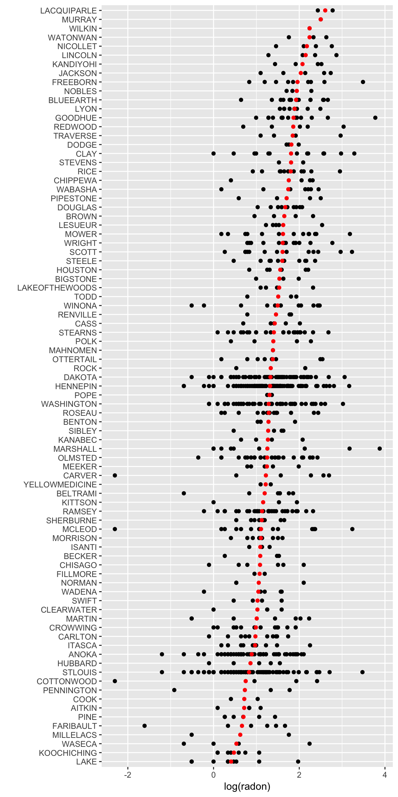
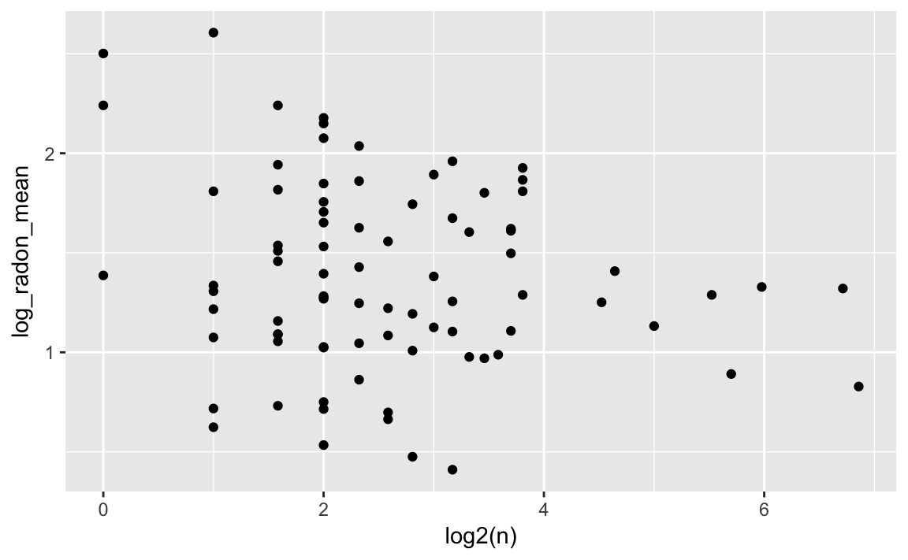

18 Multilevel Models
Multilevel models are commonly used hierarchical model. They extend (generalized) linear models to include coefficients that vary by discrete groups.
Suppose that there are \(i = 1, dots, n\) observations, and each observation is in one of \(j = 1, \dots, J\) groups. Let \(j[i]\) be the group for \[ \begin{aligned}[t] y_i &\sim \dnorm(\alpha_{j[i]} + \beta_{j[i]} x_i, \sigma^2) \\ \begin{bmatrix} \alpha_j \\ \beta_j \end{bmatrix} & \sim \dnorm \left( \begin{bmatrix} \mu_\alpha \\ \mu_\beta \end{bmatrix}, \Omega \right) \end{aligned} . \]
Pooled model: All coefficients are common between groups. This is equivalent to a linear model. \[ \begin{aligned}[t] y_i &\sim \dnorm(\alpha + \beta x_i, \sigma^2) \\ \begin{bmatrix} \alpha \\ \beta \end{bmatrix} &\sim \dnorm \left( \begin{bmatrix} \mu_{\alpha} \\ \mu_{\beta} \end{bmatrix}, \Omega \right) \end{aligned} \]
Pooled model: All coefficients are common between groups. This is equivalent to a linear model. \[ \begin{aligned}[t] y_i &\sim \dnorm(\alpha + \beta x_i, \sigma^2) \\ \end{aligned} \] Varying-intercept: The slope coefficients (\(\beta\)) are common between groups, but the intercepts (\(\alpha_j\)) vary by group. \[ \begin{aligned}[t] y_i &\sim \dnorm(\alpha_{j[i]} + \beta x_i, \sigma^2) \\ \end{aligned} \] Varying-slope model: The groups share a common intercept, \(\alpha\), but the slope coefficient (\(\beta\)), varies between groups. This is less common since it is hard to think of cases when it is appropriate. \[ \begin{aligned}[t] y_i &\sim \dnorm(\alpha + \beta_{j[i]} x_i, \sigma^2) \\ \end{aligned} \] These models go by different names in different literatures: hierarchical (generalized) linear models, nested data models, mixed models, random coefficients, random-effects, random parameter models, split-plot designs.14
The model can be extended to other cases:
- generalized linear models
- multiple parameters
One of the difficulties in these models is the prior to the covariance matrix, \(\Omega\).
Figure 18.1: Visual representation of hierarchical models
18.1 Example: Radon
This example models the presence of radon in houses in Minnesota which appears in A. Gelman and Hill (2007) and Gelman et al. (2013).
This is partly derived from a Stan Case Study, which uses PyStan instead of rstan.
18.1.1 Data
The radon data is included in the rstanarm package.
data("radon", package = "rstanarm")
glimpse(radon)
#> Observations: 919
#> Variables: 4
#> $ floor <int> 1, 0, 0, 0, 0, 0, 0, 0, 0, 0, 0, 0, 0, 0, 0, 0, 0,...
#> $ county <fct> AITKIN, AITKIN, AITKIN, AITKIN, ANOKA, ANOKA, ANOK...
#> $ log_radon <dbl> 0.8329, 0.8329, 1.0986, 0.0953, 1.1632, 0.9555, 0....
#> $ log_uranium <dbl> -0.689, -0.689, -0.689, -0.689, -0.847, -0.847, -0...The data consist of 919 observations of radon levels of houses from 85 counties.
radon_county <- radon %>%
group_by(county) %>%
summarise(log_radon_mean = mean(log_radon),
log_radon_sd = sd(log_radon),
log_uranium = mean(log_uranium),
n = length(county))ggplot() +
geom_point(data = radon,
mapping = aes(y = log_radon,
x = fct_reorder(county, log_radon, mean))) +
geom_point(data = radon_county,
mapping = aes(x = fct_reorder(county, log_radon_mean),
y = log_radon_mean),
colour = "red") +
coord_flip() +
labs(y = "log(radon)", x = "")
Relationship between mean and sample size

18.1.2 Varying Intercepts Models
Consider the general model with an intercept for each county representing the baseline average of the county: \[ \begin{aligned} y_i &\sim N(\mu_i, \sigma^2) \\ \mu_i &= \alpha_{j[i]} + \beta x_i \end{aligned} \] where \(j[i]\) means that observation \(i\) is in county \(j \in (1, \dots, 85)\).
In this particular example, \(y = \mathtt{log_radon}\) and \(x = \mathtt{basement}\). \[ \begin{aligned} \mathtt{log\_radon}_i &\sim N(\mu_i, \sigma^2) \\ \mu_i &= \alpha_{j[i]} + \beta~\mathtt{basement}_i \end{aligned} \]
We can put a prior distribution on \(\alpha_{j[i]}\), \[ \begin{aligned}[t] \alpha_{j} &\sim N(\gamma, \tau) & \text{for $i \in (1, \dots, 85)} \end{aligned} \] This parameterization nests common cases,
Complete pooling: When \(\tau \to 0\), the intercepts are the same, \[ \begin{aligned}[t] \alpha_j &= \gamma & \text{for all $j$.} \end{aligned} \]
No pooling: When \(\tau \to \infty\), prior distribution on the intercepts is equivalent to an improper normal distribution, and there is no shrinkage, \[ p(\alpha_j) \propto 1, \] for all \(j\).
Partial pooling: When \(\tau\) is a parameter, the amount of shrinkage can be estimated from the data.
18.1.3 Varying Intercept Model
18.1.4 Varying Slope Model
\[ \begin{aligned} \mathtt{log\_radon}_i &\sim N(\mu_i, \sigma^2) \\ \mu_i &= \alpha_{j[i]} + \beta_{j[i]}~\mathtt{basement}_i \end{aligned} \]
18.1.5 Group Level Predictors
The radon dataset also contains the county-level measurements of uranium.
One way to include county level measurements is to model the county-level intercepts. The values of each county intercept is a function of the county-level uranium. \[ \begin{aligned} \mathtt{log\_radon}_i &\sim N(\mu_i, \sigma^2) \\ \mu_i &= \alpha_{j[i]} + \beta_{j[i]}~\mathtt{basement}_i \alpha_{j} \sim N(\gamma_0 + \gamma_1~\mathtt{log\_uranium}_j, \tau) \end{aligned} \]
Alternatively, we can model model the county-level intercepts. The values of each county intercept is a function of the county-level uranium. \[ \begin{aligned} \mathtt{log\_radon}_i &\sim N(\mu_i, \sigma^2) \\ \mu_i &= \alpha_{j[i]} + \beta_{j[i]}~\mathtt{basement}_i \\ \alpha_{j} &\sim N(\gamma_0 + \gamma_1~\mathtt{log\_uranium}_j, \tau) \end{aligned} \]
18.1.6 lme4
In R, the most widely used package to estimate mixed-effects models is lme4. This estimates models using maximum likelihood or restricted maximum likelihood methods (REML). This will be faster than using full-Bayesian methods but also underestimate the uncertainty, as well as being a worse approximation of the posterior. Additionally, in frequentist inference, the meaning of the random effects is different; they are nuisance parameters and not given standard errors.
See Bates (2010) and Bates et al. (2014) for introductions to mixed-effects models with lme4. These are also good introductions to classical approaches to mixed effects models.
Complete pooling
County-varying intercepts with no-pooling
County-varying intercepts with partial-pooling
Varying slopes with no pooling:
Varying slopes with partial pooling:
Including a county-level variable (log_uranium) in various models:
With no-pooling,
With varying-intercepts
With varying-intercepts and slopes,
18.1.7 rstanarm
Some multilevel models can also be estimated using the rstanarm functions stan_glmer and stan_lmer.
These functions have syntax similar to lme4 functions, but estimate the mixed models using Bayesian methods with Stan.
Complete pooling
County-varying intercepts with no-pooling
County-varying intercepts with partial-pooling
Varying slopes with no pooling. There is an error estimating this
fit_slope_nopool <- stan_glm(log_radon ~ -1 + county + county:floor,
data = radon,
prior = normal(scale = 1))Varying slopes with partial pooling:
Including a county-level variable (log_uranium) in various models:
With no-pooling,
With varying-intercepts
With varying-intercepts and slopes,
18.2 Pooling of Hierarchical Parameters
This is easiest understood in the case of a model of group means, \[ \begin{aligned}[t] y &\sim \dnorm(\mu_{j[i]}, \sigma^2) \\ \mu_{j} &\sim \dnorm(\gamma, \tau^2) . \end{aligned} \] Each group has size \(n_j\).
| Sample size, \(n_j\) | Estimate of \(\hat{\mu}_j\) |
|---|---|
| \(n_j = 0\) | \(\hat{\mu}_j = \gamma\) (complete pooling) |
| \(n_j < \frac{\sigma^2}{\tau^2}\) | \(\hat{\mu}_j\) closer to \(\gamma\) |
| \(n_j = \frac{\sigma^2}{\tau^2}\) | \(\hat{\mu}_j = \frac{1}{2} \bar{y}_j + \frac{1}{2} \gamma\) |
| \(n_j > \frac{\sigma^2}{\tau^2}\) | \(\hat{\mu}_j\) closer to \(\bar{y}_j\) |
| \(n_j = \infty\) | \(\hat{\mu}_j = \bar{y}_j\) (no pooling) |
If the hyperparameters were known, the posterior of \(\mu_j\) is \[ \mu_j | y, \gamma, \sigma, \tau \sim \dnorm(\hat{\mu}_j, V_j) \] where \[ \begin{aligned}[t] \hat{\mu}_j &= \frac{\frac{n_j}{\sigma^2} \bar{y}_j + \frac{1}{\tau^2} \gamma}{\frac{n_j}{\sigma^2} + \frac{1}{\tau^2}} \\ V_j &= \frac{1}{\frac{n_j}{\sigma^2} + \frac{1}{\tau^2}} \end{aligned} \]
Some crude estimates given \(\mu_j\).
The data variance, \(\sigma^2\), is the residual variance, \[ \E(\sigma^2 | y, \mu) = \frac{1}{n} \sum_{i = 1}^n (y - \mu_{j[i]})^2 . \] The global mean is approximately the average of the group-level means, \[ \begin{aligned}[t] \E(\gamma | y, \mu) &= \frac{1}{J} \sum_{i = 1}^n \mu_j \\ \Var(\gamma | y, \mu) &= \frac{1}{J} \tau^2 \end{aligned} \] The group level variance is \(\tau^2\) is, \[ \E(\tau^ | y, \mu) = \frac{1}{J} \sum_{j = 1}^J (\mu_j - \gamma)^2 \]
18.3 ANOVA
TODO
18.4 Time-Series Cross Section
TODO
A common application for these models are Time-Series Cross-Section (TSCS) or panel models. In this case, both the time and units can be modeled.
## Extensions
Including group-level covariates
Prior distributions
Prediction
- new obs in existing groups
- new group
- new obs in new group
Modeling correlation between intercept and slopes
Non-nested models
18.5 Miscellaneous
18.5.1 How many groups?
In classical discussions of multi-level or hierarchical models, a common question is how many groups are required to be able to use random effects vs. fixed effects.
As noted earlier, random effects estimates the variance between group means. If there are few groups, there is not much information available to estimate this variance. As such, random effects is not much different than fixed effects.
This literature provides many different rules of thumb for the number of groups necessary to be able to use random effects: 8, 10, 30, 50, or 100 (Stegmueller 2013, 749).
Stegmueller (2013) finds that Bayesian method produces better multi-level-models than maximum likelihood methods for all numbers of groups. ML methods do not suffer severe bias above 10-15 groups. Bayesian point estimates are biased for smaller numbers of groups, but less than the ML. Additionally, the Bayesian methods have better frequentist coverage than ML methods.
Beck and Katz (2007) show that ML random coefficient models are superior in terms of efficiency to many types of pooled and un-pooled estimators in small samples.
18.5.2 Correlation between Predictors and Errors
Bafumi and Gelman (2006) analyze this case.
The standard suggestion in frequentist literature is to use a Hausman test where the null hypothesis is that random effects are consistent. However, Clark and Linzer (2014) note that in small samples this is likely to fail to reject random effects; and in large samples, random effects behave like fixed effects anyways.
18.6 References
Texts and chapters on multi-level analysis:
Bayesian
- A. Gelman and Hill (2007 Ch. 11-17).
- Gelman et al. (2013 Ch 5) “Hierarchical Models”
- Gelman et al. (2013 Ch 15) “Hierarchical Linear Models”
- Jackman (2009 CHh. 7)
- Draper (2008)
Frequentist
- Goldstein (2011)
- Snijders and Bosker (2011)
- Rabe-Hesketh and Skrondal (2012)
- Jiang (2007)
Stan model examples:
- Stan models for ARM
- http://mc-stan.org/documentation/case-studies/radon.html
- https://biologyforfun.wordpress.com/2016/12/08/crossed-and-nested-hierarchical-models-with-stan-and-r/
Examples of multilevel models
Western (1998): economic growth for OECD countries
Gelman and King (1993): US election polling
Park, Gelman, and Bafumi (2004): multi-level models of opinion polls combined with post-stratification to extrapolate national opinion surveys to regions.
Steenbergen and Jones (2002): mostly an intro/review of MLM, but uses the cross-country Eurobarometer to model support for the EU
A. Gelman et al. (2007): state-level opinion polls
Raudenbush and Bryk (2001): student performance with student and school-level indicators
Gilardi (2010): policy diffusion
O’Rourke and Sinnott (2006): attitudes toward immigration
Andersen and Fetner (2008): ethnic and social tolerance
Weldon (2006): ethnic and social tolerance
Arzheimer (2009): right-wing voting
Hooghe et al. (2009): social and political trust
Anderson and Singer (2008): satisfaction with democracy
Meer, Deth, and Scheepers (2009): political participation
Iversen and Rosenbluth (2006): political economy of the gender wage gap
Hooghe and Marks (2004): support for European integration
Lax and Phillips (2009): American politics using states and neighborhoods
Voeten (2008): judicial decision making
Franchino and Høyland (2009): legislative politics
Denisova et al. (2009): politics of economic reforms
Aitkin and Longford (1986), Goldstein et al. (2000), Goldstein et al. (1993): education
Goldstein et al. (2000): medicine